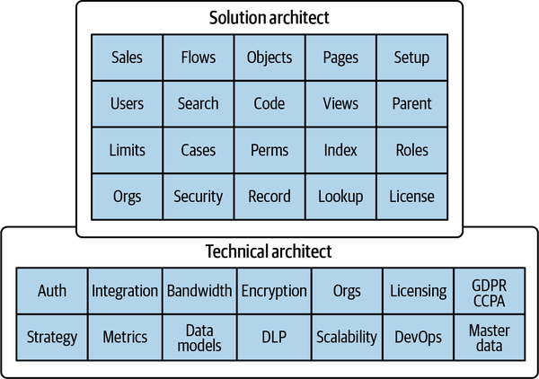
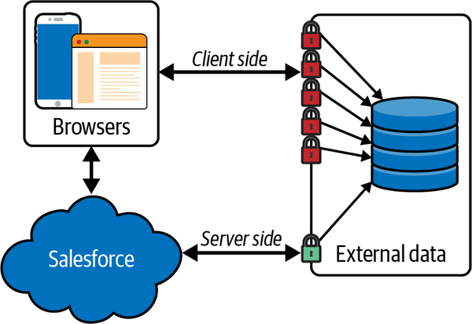
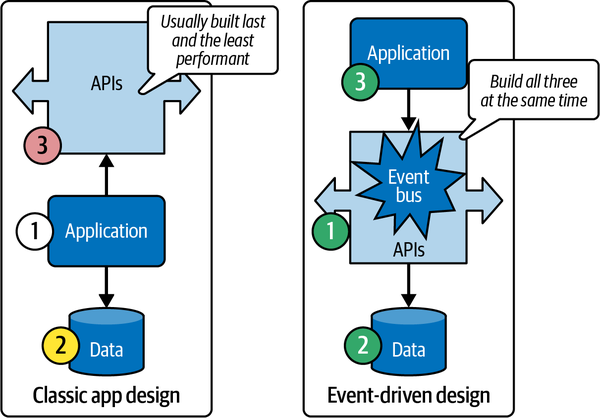

We’ve already discussed some of the systems involved in moving data into and out of the Salesforce ecosystem, but in this chapter we will look at the actual endpoints for connecting to that data. The most important thing to know about Salesforce connectivity is that you have to do almost everything with web service calls.
This chapter leans heavily on the concept of APIs. Broadly speaking, an API is any interface used to expose or share an application or system’s data outside of itself in a programmatic fashion. There are many types of APIs: some require running on the same machine as the source system, some can be accessed over the web or HTTP. There are no accessible APIs that allow you to process Salesforce platform data without going through an HTTP-based API. Representational State Transfer (REST) is the preferred HTTP method, but some Simple Object Access Protocol (SOAP) interfaces persist. This can present some interesting challenges for enterprise architects that are accustomed to having a larger suite of patterns at their disposal natively. For example, automated processing of data in file format is not a feature of the core platform. There are many ways to achieve file processing with additional components or purchases, but not natively. (Data Loader, for example, is a free Java application maintained and distributed by Salesforce that can be installed on a server to parse files and push the data in them into Salesforce, using web service calls.) Salesforce’s functional ecosystem is expanding at an exciting pace. Salesforce Functions and the platform event bus hint at the large-scale direction that will enable more enterprise-capable solutioning.
In the world of Salesforce practitioners, the word architect has a lot of different uses (we’ll look at more of them in Chapter 11). One distinction that is sometimes made is between a technical architect, who may focus on initial setup and one-time configuration of elements that possibly work with external systems, and a solution architect, who focuses on planning and building internal functionality. Figure 5-1 illustrates some of the roles and duties of technical architects and solution architects (using a simplified definition of each). There’s a lot of overlap between the two. The technical architect has other important functions, but integrations with other systems are one of the main differentiators. The technical architect will also tend to work on things once, establish a pattern or approach, and move on.

In Salesforce, there are more and more system integrations that can be done without having to deal with external system complexities. As an example, sending emails via Salesforce doesn’t require any understanding or configuration of mail servers or relays. Email is effectively fully integrated into the Salesforce platform. Salesforce will continue to bring additional third-party functionality into the core platform, reducing the effort required to use it.
An enterprise architect tends to make comparisons across multiple systems (features, functionality, stability, cost) in order to build the optimal solution. As you expand your knowledge, pay attention to what each system does well. Also learn what your organization is efficient at implementing or managing. If you combine this with your knowledge of the costs involved in connecting to some other system, you will know when to create an integration. Customization, reliability, licensing, support, speed, complexity, and security are a few of the factors that should influence your decisions. For connecting to or from Salesforce, you will need to understand the different endpoints that connections will access coming in or out. Each endpoint may speak a different language or have other differentiating features that you should understand in order to know when to use them in or exclude them from your solutions.
Outbound connections from the Salesforce server only take a few fundamentally different pathways. The most common of these outbound data push or data fetch pathways are defined in Apex calls. Apex is the programming language primarily involved in any data manipulation customization within Salesforce (see Chapter 8). Apex calls create web service calls, either explicitly or by referencing configuration settings for outbound resources (the latter being the preferred method for security and maintenance).
Apex can process outbound requests synchronously or asynchronously. Asynchronous requests are sometimes referred to as “future methods” because of the way the callouts are labeled in code (@future). Internal and external data actions are governed (limited) to prevent overuse of shared I/O. Asynchronous requests are allowed more leeway than synchronous requests, so you should expect to spend extra effort if you need transactional integrity or sequential processing. One big caveat is that asynchronous calls are queued for execution across multiple tenants, and they can be highly variable in their execution times.
Owing to the increasing integrations with Marketing Cloud and other Salesforce-adjacent platforms like Snowflake, Slack, and Tableau, you may also consider outbound and inbound connections from those platforms as first-order endpoints. Marketing Cloud Customer Data Platform (CDP, recently rebranded as Genie) and Salesforce Functions have some very tight integrations with the Salesforce platform and can also effectively “share” data.
Salesforce Genie is effectively an enhanced graph-type service connected across different data partners and Salesforce instances. You can think of it as enabling data virtualization and relationship mapping across systems. It connects the data shared between the systems together to provide the most accurate version, regardless of where it was updated most recently. Tools for building systems based on graph architectures have been slow to reach maturity due to reliance on too many points of failure. Salesforce will likely have architected redundancy into this infrastructure, ensuring better results. The original functionality that was meant to bridge different systems—primarily those of the same customer from Marketing Cloud and any other Salesforce system—was called Customer 360. The product was then renamed CDP and started to include other systems. Now known as Genie, with its rabbit mascot, it is being marketed as a holistic solution for any data, not just customer concepts. The performance for a system of virtual joins will be interesting to learn about, because latency is a challenge with this type of system. It can work fast, if you have a copy of the data somewhere to flatten or maintain join metadata like statistics and indexes. It can even be real-time, if you have highly responsive systems to provide data and have a fast system to do all the join operations. I’m not aware of an existing architecture that has built a successful foundation for this to reuse, however. If there is a healthy and scalable base system, this could be an industry-changing platform, especially if the claim of it being “zero-copy” is true.
Salesforce Functions will probably reach high levels of seamless integration in the near future. It’s also very likely that certain Apex functions will leverage the new compute infrastructure, solely dependent on a predictive estimate of where the work would best be done. Salesforce Functions will effectively be a new headless compute entity that will be able to call outside data or call back into Salesforce data. Just like our email example, Salesforce Functions will likely be seamlessly integrated, but there may be some minor differences in the outbound endpoint or calls since it is technically originating from the headless stack.
There are multiple ways to access Salesforce data from remote systems. The overwhelming majority of data and metadata within Salesforce is available or accessible via API calls that are all exposed by default. The most common pattern after that is to create accessible data endpoints with Apex code. Apex is able to initiate any actions within the Salesforce platform. The endpoint code called by remote systems can be run as root (unlimited administrator access), or you can enforce user permissions based on the credentials used by the calling service.
Endpoints can use the XML-based SOAP or the more flexible REST. There are automatically created endpoints that expose most of the information that you might need, and you can also create endpoints manually with custom code. It’s very easy to label pieces of code to expose them as endpoints—almost too easy, as a lot of practice is required to secure those endpoints properly. The annotation used to designate code for external consumption is @AuraEnabled. You are able to expose different types of authentication protocols to different sets of users, which adds additional consumption options for your data.
Salesforce provides a very comprehensive library of integration patterns for reference.
There are two main ways to reach out to data from the client side: iframes and Asynchronous JavaScript and XML (Ajax). Both of these pose potential security risks, and code that relies on them is subject to security changes by both IT departments and browser makers that can cause it to break. While users’ browsers are able to make calls via Ajax and JavaScript, reducing latency and the server-borne request load, there are a lot of reasons to avoid this pattern. If your browser is surfing one domain and calling data from another, this is called cross-site scripting (XSS). XSS is a common hacking vector; to protect users from it, makers of browsers like Chrome and Safari have made the rules for pulling code or data from sites other than the one you intended to visit more and more restrictive.
Figure 5-2 illustrates the trade-off in load and complexity between server-side and client-side patterns. Note that with the client-side approach, you wouldn’t want to pass any credentials to the browser so that it can authenticate to the external data source. You can exchange a token that can be used as a temporary credential, but this is extra work as well.

On top of that, if the data call fails for any reason, you will have to include additional logic to process the failure. This makes the user’s browser a network node in the application architecture, and you will have to secure and verify all possible points of access. VPNs and other such user networking complexities can also cause failures, and you’ll need to deal with the challenge of getting the JavaScript call to be appropriately authenticated for the user’s session. All of this will require a lot of custom coding. Only pursue this avenue if your use case warrants the effort and long-term maintenance costs.
Since Salesforce is based on common standards, most third-party middleware systems will work well with Salesforce. There are several middleware system vendors that specialize in Salesforce and have polished, supported methods for moving data in and out with little work or experimentation required. Jitterbit, Boomi, and Informatica have all seen success in the Salesforce space as iPaaS providers.
Since its acquisition, MuleSoft has become one of the most talked about middleware components in the Salesforce ecosystem. MuleSoft provides a great deal of functionality: it’s an API orchestration tool that is capable of performing a wide range of endpoint interactions as well as ETL functions. With sufficient development time you can write Apex code to execute most of these functions yourself, but it’s much easier to keep track of complex integrations with specialty toolsets.
The entire concept of middleware is evolving, and few true “middleware-only” services exist today. Most of them have started to include other services, like message bus and data management capabilities. In addition, Salesforce has implemented quite a few direct connections to data management provider Snowflake, which could reduce the reliance on middleware to manage connections to data systems outside the core platform.
Event-driven architecture (EDA) is a robust data pattern that is starting to take hold in the Salesforce ecosystem. Salesforce’s platform event bus is an internal implementation of a very powerful streaming platform called Kafka. Kafka is an open source system that has a long history of fueling high-volume application designs. With this technology at its core, Salesforce instances are able to send large volumes of messages reliably to distributed systems. This message pathway and other enterprise integrations decouple your system from low- to mid-scale patterns and equip you to handle larger volumes of data in the future. It does take some forethought to decide when EDA should be implemented, but once you’ve created the foundation for an event architecture the development process should be relatively similar to the traditional work.
Figure 5-3 is an illustration of classic versus event-driven design patterns. Traditionally, you focus first on building a working system. Then, if the data it produces becomes so popular that the demand starts to negatively affect the system, you bolt on additional functionality to serve those requests. This may require rewriting a lot of core functionality. With an event-driven design approach user experience is still at the forefront, but immediately after considering the interface you think about other ways that the data may be useful. Is it relevant only in the context of that application, or is it something that will be valuable information for other systems? Early designation of data that is bound to be master data or an event that is or signals valuable data is key. Wiring to connect an event bus to an integration layer should already exist in most large enterprises. Third-party services also have data fabric offerings that can be canned solutions if you don’t have a healthy high-volume middleware layer as a turnkey.

The other big consideration with events is transactional integrity. Many event-based systems are prone to message loss and order of operation unpredictability. This must be acceptable for your data model, or you need to build in protections. You almost always want to keep data flowing in as few unique pathways as possible, for simplicity and maintainability. However, using data keys and being able to utilize the bus to invoke transactional logic may be a necessity.
MuleSoft also has a message queue system that can participate in these larger distributed network patterns. Being able to move the functions of the event bus to different systems and focus different teams on different parts creates a lot of operational flexibility. In this scenario, different teams can use different tools and distribute the workload and responsibility.
OAuth is a very common protocol used in Salesforce integrations. In the API key authorization model, the service endpoint provider creates a unique value and provides it to each individual consumer. For packages that connect to services outside of Salesforce this is often implemented as a named credential, in which the key is substituted for the password value and associated with a specific web URL. In this manner, each user of the service can only access it if their individual key is valid and the credential is scoped to a single URL endpoint, making it unusable for any other service. When implemented as part of a managed package deployment, there is no need to take the additional step of also setting up the endpoint URL. (For all other cases you must create one remote site endpoint in your org’s settings.) All named credentials are automatically authorized for external communication.
The OAuth model is more complex to implement and administer. OAuth is a standardized framework that functions by establishing one or several authorization granting authorities. These authorities provide and validate a series of tokens and related permissions used by consumers to access defined resources. In a typical implementation, the org administrator will configure a credential that specifies the target external application URL. The application owner will provide a set of keys, one of which is a unique identifier and one of which is an encoded hash (commonly known as a client ID and client secret), which the org admin will store in the credential configuration. It is usually required that the consumer provide their public org URL to the application owner as part of a registration process to establish it as an authorized caller. The application can then call this URL for validation when a request is initiated (thus it is often known as a callback or reply URL).
Once a credential has been established and validated by the org administrator, any calls to the external application go through a back-and-forth token exchange process to establish the validity of the requestor’s identity and permissions. The first time this occurs there is often a consent process in which the requester must accept a set of permission grants or scopes as defined by the external application, or, if calling back into the consumer’s org, an available grant provided by Salesforce. These grants often must be renewed from time to time to ensure that only authorized access is being provided. Once the initial grant consent process has been completed, the two systems can begin the token exchange process, the result of which is a bearer or authorization token that can be used by the calling application to access the remote resource. This permits a flow of requests and responses without the need for continual authentication prompts; however, all such tokens have expiration periods and must be refreshed periodically, either administratively or through an interactive logon process.
Despite the increased complexity, OAuth is widely supported and is one of the most common methods in use for otherwise unrelated web applications to exchange data. It is important to note that the OAuth process does not capture, analyze, or validate any user passwords; it is not an authentication scheme but rather an authorization scheme, allowing already authenticated users to authorize communication between systems they have access to, and only when such access as has been defined in the explicit permission grants. While not foolproof, it is more secure than a simple exchange of key/value pairs, and it’s much less prone to exploitation than other legacy authorization mechanisms. It is not necessary to fully understand the inner workings of the OAuth token exchange process in order to implement it, and you may not need to use it any time soon. Still, knowing the basics of how it functions can make it easier to deploy, secure, and manage third-party solutions within your org or provide access to your data from other applications outside of Salesforce.
Middleware and connectivity is another very exciting part of the Salesforce ecosystem. Extremely powerful pieces of enterprise functionality are being released at a regular cadence. A recurring focus of this book is highlighting the new components of the ecosystem that move Salesforce from a sales automation platform to a fully fledged enterprise application and data platform. With each such development, the platform’s ability to serve the full range of our organizational needs grows. Vertical integration can make enterprise architecture (EA) problems much easier to solve. These functions aren’t Salesforce’s bread-and-butter applications, but despite the relative lack of marketing and fanfare, many exist.
Communication about EA–level features is still nascent in the ecosystem, but it’s improving; the Salesforce Architects website and blog are the best sources of this type of knowledge.
High-volume data patterns have many additional complications that have to be accounted for. In Salesforce’s consumption-based model, licensing can be expensive and difficult to forecast and track. Salesforce has a collaborative “true-up” model that can make charges less disruptive to the project goals. Regardless, understanding how your event signals are emitted and consumed can be difficult. For this reason, many people opt for a simpler unlimited model, trading more effort and possibly higher cost for predictability. Working in an environment where there are no consequences for unplanned growth can be a huge benefit as you are attempting to understand your scaling needs.
Since most event bus components are designed around speed and scale, security can be overlooked. DLP and intrusion detection (ID) systems may not be able to keep up with the data rates that event architectures support. Segmenting sensitive and less-sensitive data distinctly within your event architectures is highly recommended; the added security this allows you to provide for sensitive data is usually well worth the additional management effort.
Another problem with some EDA applications is validation. Unlike with a bulk nightly synchronization pattern, missed or failed event updates don’t have an easy fix with the next night’s full upload. This problem exists for incremental synchronization patterns too, but it can lead to distrust of your data. There are many checksum and error handling patterns that can mitigate this concern with a little more effort. Any time that data has enough value that missing any fraction of transactions causes angst, you can always switch to a transaction pattern or add error logic.
As with any system, there’s no perfect calculator for determining how many of each type of possible transaction Salesforce can handle over a given time period. There are very detailed documents out there to guide you as you consider when you might be approaching a boundary and need to consider putting one of these force-multiplier patterns into use.
As evidenced by the acquisitions of MuleSoft and Tableau, Salesforce sees a future in bigger data. Watch for Genie and big objects to also play a big role in moving solutions from narrowly targeted functions to enterprise-scale suites of functionality. Tableau and Snowflake are already in a class of their own, and the future will likely see more and more leveraging of the raw power of the AWS infrastructure.
Blockchain is one of the few areas that hasn’t seen a major offering within the Salesforce ecosystem, but they may only be waiting to hear about more customer demand. This is another trustable interchange technology that has yet to have a big impact beyond digital currency but is likely to continue to work its way into business technology use cases.
In general practice, Salesforce is a good single pane of glass to surface data from remote systems easily. There are decades of history of systems being able to talk to Salesforce and have Salesforce pull remote data. With the application logic layer in between all inbound requests, it’s definitely better to think in terms of events and atomic updates instead of using nightly sync patterns. There are bulk access and upload pathways (see Chapter 3), but those can get clunky.
There is definitely some art and many skills involved in getting systems talking to each other. With Salesforce, as long as you appropriately size your requests and operate within your limits or budget, this is all handled for you. Leveraging external powerhouse providers like AWS and Kafka is only really required when you are building extremely large systems. If you are already using those systems in your corporate ecosystem, you may need them for Salesforce. Salesforce scales well as needed and requires only some additional discipline to stay within some of its more stringent limits. For extremely large use cases there are other options, like dedicated instances, available. The biggest point to take home here is that connectivity, and in particular the connectivity that allows for massive scalability, is available and quite healthy in the Salesforce ecosystem. Salesforce is not just a simple application or application framework you will have to shoehorn functionality into; it’s an entire highly scalable cloud ecosystem that happens to live under the banner of what was a simple application some 20 years ago. It has grown to the point where it has a competitive offering on par with every modern cloud provider in every critical IT area.